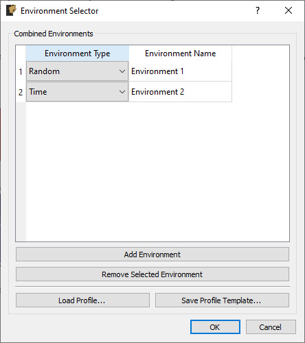

16. Combined Environments
Rattlesnake offers functionality to run multiple events simultaneously. This can be used to control multiple types of excitation devices (for example a centrifuge along with random vibration) as well as multiple environments using common excitation devices (for example a random vibration and shock environment using a single shaker table).
A combined environments test is selected by selecting the Combined Environments... option in the window shown in Figure 3-3. After selection, a GUI window will appear that allows the user to define which environments will be combined for the given test. The user adds or removes environments from the table of environments displayed in this window by clicking the Add Environment or Remove Selected Environment buttons. In the table itself, the type of environment can be chosen using the dropdown menu in the Environment Type column. Each environment must also be given a unique name in the Environment Name column. An example of this window is shown in Figure 16-1. In this example, two environments have been chosen, a MIMO Random Vibration environment called "Environment 1" and a Time History Generator environment called "Environment 2".

Figure 16-1. Dialog used to select environments for a combined environments test.
Combined environments tests have the potential to be very complex, as parameters for multiple environments need to be defined. To make the setup of combined environments tests less tedious, Rattlesnake gives the user an option to load a combined environments profile using the Load Profile... button. This profile is an Excel workbook with multiple worksheets defining the channel setup, global data acquisition parameters, environment parameters, as well as the test timeline. Rattlesnake allows the user to save a profile template to disk, which can be opened and modified to specify the entire combined environments test by clicking the Save Profile Template... button. Note that the template will be created with placeholder environments corresponding to the environments that are displayed in the Environment table, so it is in the user's best interest to add the required environments to the table using the Add Environment button and define each environment's type and name prior to saving the template.
Once the environments in the combined environments test are selected, the GUI is set up accordingly. Users will notice the addition of an Environment Table on the Data Acquisition Setup tab which can be used to determine which excitation and response channels are to be used by each environment. Excitation signals can be used by one or more environments. If an excitation signal is used by multiple environments that will be run simultaneously, the excitation signal output to the hardware will end up being a summation of the individual environment's output signals. It is up to the user to ensure that the combination of environment signals does not exceed the output that the hardware is capable of. Similarly, response signals can be used by single environments, multiple environments, or no environments. Only response signals belonging to a specific environment will be passed to that environment for analysis. Note however that the part may be responding to excitation from multiple environments, so even if a given channel is only used by one environment, it may have response contributions from all active environments. It is up to the user to design each environment such that this "cross-talk" is handled correctly, Rattlesnake will not attempt to separate a given response into contributions from each environment. If a signal is used by no environments, it will still be recorded and saved to disk; however, data from it will not be delivered to any environment.
With multiple environments defined, the Environment Definition and Run Test tabs will have a sub-tab to define or control each environment. On the Environment Definition tab, each environment's sub-tab will need to be defined prior to selecting the Initialize Environments button. Additionally, certain environments will have System Identification or Test Prediction tabs. System identification will need to be performed for each environment that requires it prior to proceeding with the test setup.
The last major change to the GUI for a combined environments test is the inclusion of the Test Profile tab which allows users to create a timeline of events that will occur in the combined environments test. This is described more thoroughly in Section 3.6 Test Profiles.